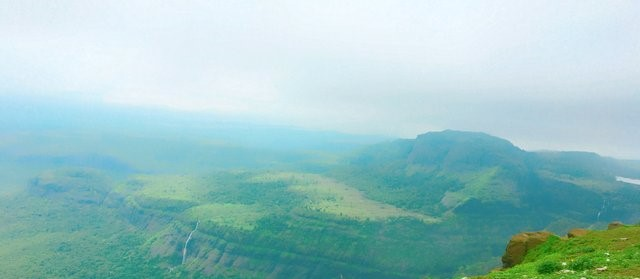
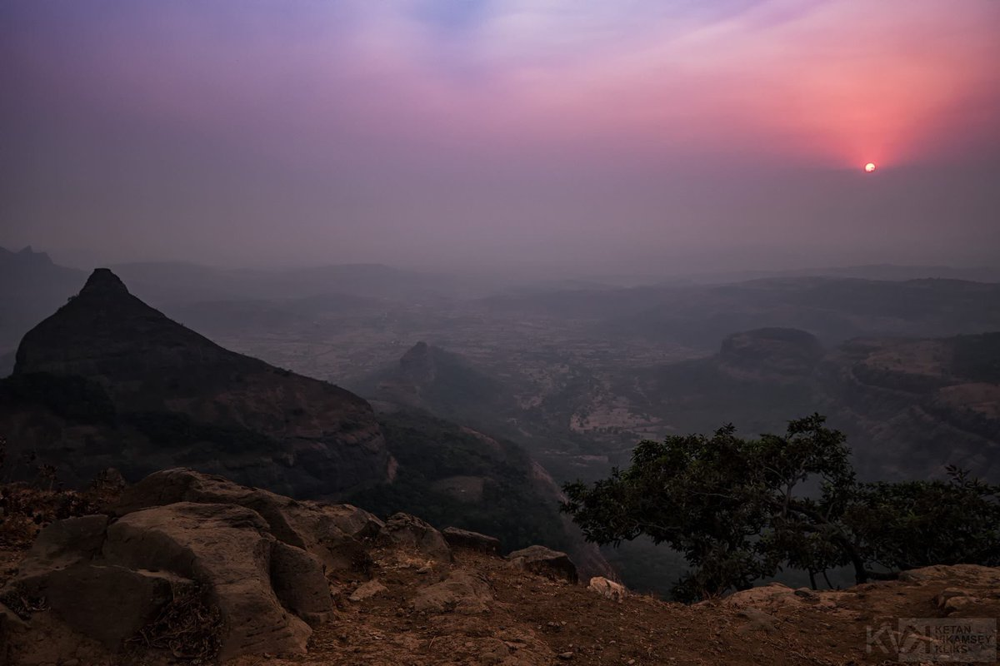
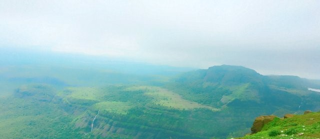
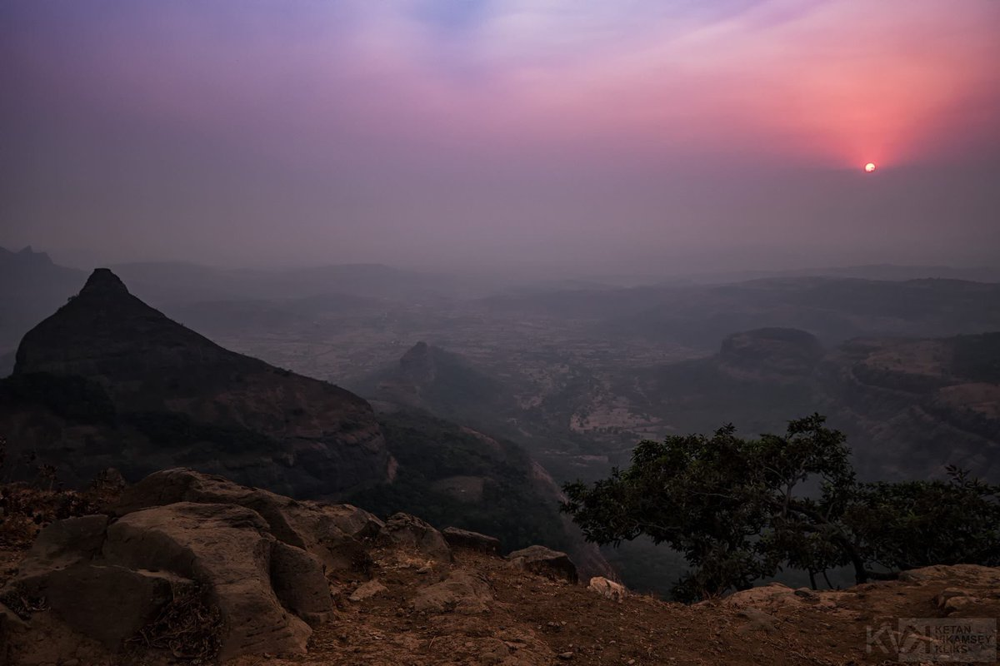

Tiger Point
 



Category: Hill Station
About Place:
The point derives its name from its resemblance to the shape of a leaping tiger. It offers spectacular views of forests, lush greenery, waterfalls and lakes around. ... There is a small waterfall near to this viewpoint, which flows during the monsoon months only. One can view great Sunrise, Sunset.

Season to visit: Monsoon.
Preferred time: Any
Type : Family, Friends
Author : Siddhant Sonawane